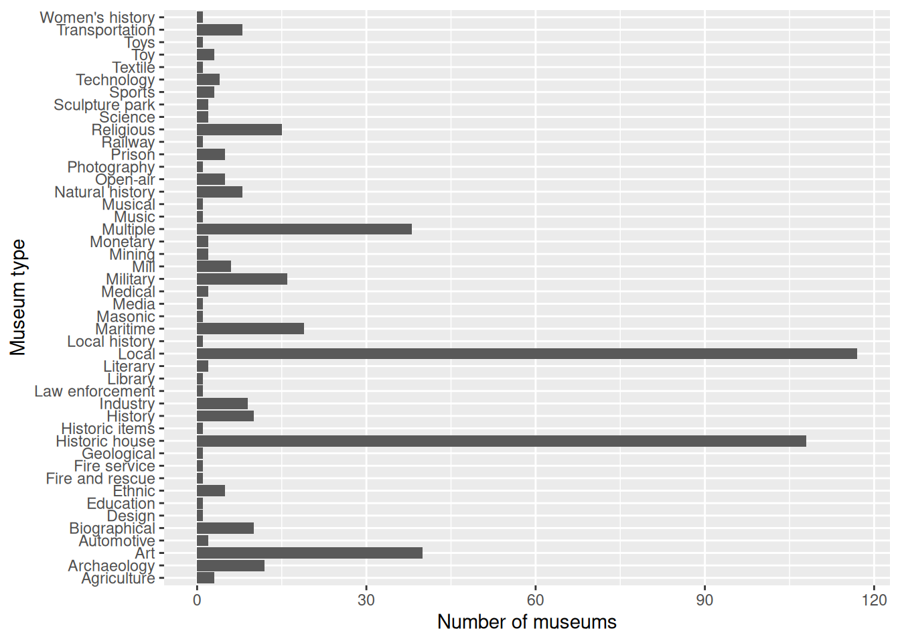
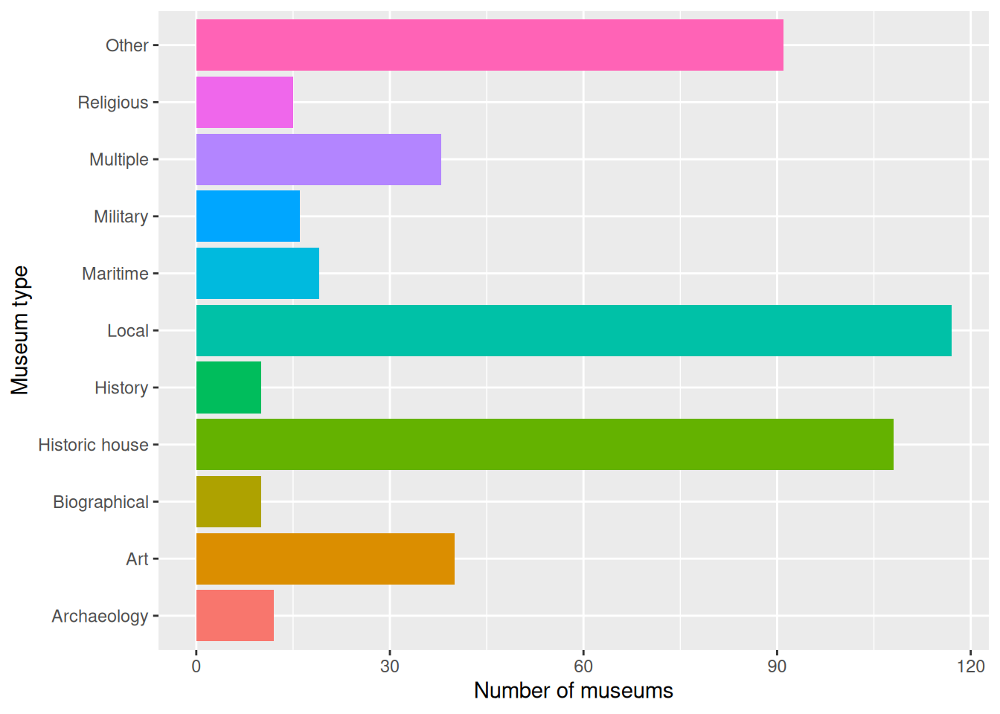

Run in Console
install.packages(c("tidyverse", "httr2", "janitor", "modelsummary"))Let’s say we are interested in museums in Scotland. Wikipedia has a list of museums in Scotland. There are a number of different ways we can analyse such information from Wikipedia, but let’s initially focus on which of those listed have an accompanying Wikipedia page or not.
As very first step some critical considerations:
Hint: You can find a mix of information for the above between the main page and the Talk page.
Turning to R, first we need to install the packages we will be using.
Run in Console
install.packages(c("tidyverse", "httr2", "janitor", "modelsummary"))c() function let’s use combine our values as a list of packages to install rather than needing to write three lines of code for install.packages().install.packages() in the Console as we only need to run it once and only for the packages we do not have installed already.Packages are installed into our device’s storage. In contrast, when we ‘load’ libraries we are adding them to the current active R environment. This means we need to load them each time we start a new R environment. Even when working in the same project over time we may want or need to restart our R environment, requiring us to load the packages again.
So, rather than loading them via the console, it’s better to do so at the start of every R script / R Markdown file to make it easier to rerun the code as needed.
httr2 to make requests to websites. It can also be used for workign with web APIs - application programming interfaces.tidyverse is a ‘meta-pacakge’, a collection of packages that follow a common design philosophy and provide functions for a lot of common data analysis tasks. They can be installed together and most are loaded together too.rvest is a tidyverse package for working with web scraping tasks. As not all forms of analysis need these features it is not loaded by default when loading the tidyverse, so needs to be loaded separately.janitor for some reason does not link above to the homepage for its documentation, but it is a ‘tidyverse-friendly’ package providing functions for data cleaning.modelsummary is a good package for creating nicely formatted tables. It can produce descriptive statistics, cross-tabulations, and tables of statistical models, including regression results.Feel free to continue using the same R project folder that you started in Data Project 1.
If starting in a new project folder, then we also need to create a data folder to have a shared consistent location to store the data we will be using:
Run in Console
dir.create("data", showWarnings = FALSE)showWarnings = FALSE as this will silence the warning that will get raised if the data folder already exists.Now we can download a copy of the list of Scottish museums.
This is the general template for downloading a webpage:
Template
request("WEBSITE_URL") |>
req_user_agent("CLIENT_NAME/VERSION (EMAIL)") |>
req_perform(path = "data/FILENAME.html")request() comes from the httr2 package.|> is the syntax for a pipe when let’s you ‘chain’ functions together and is commonly used with the tidyverse and tidyverse-friendly package.req_user_agent(). (See Wikimedia Foundation User-Agent Policy)CLIENT_NAME identifies the software being use - for a short data analysis script we can just give a descriptive name for it - and an optional version number, e.g 1.0, and then your email address in brackets. (Different sites can have different policies but this is the general format Wikimedia advises.)req_perform() to run the request() call we have setup and choose where to save it’s response (i.e. a downloaded copy of the webpage).IMPORTANT: Add this to its own code chunk, but do not repeatedly run it. It is good practice to limit how often making requests and to avoid making needless requests. We keep this in the file rather than Console in case need to run it again in future - e.g. to download latest version of the page.
So for our example:
request("https://en.wikipedia.org/w/index.php?title=List_of_museums_in_Scotland") |>
req_user_agent("ScottishMuseaumExercise (alasdair.stewart@glasgow.ac.uk)") |>
req_perform(path = "data/museums_scotland.html")Next, we can read the HTML and create a dataframe.
page <- read_html("data/museums_scotland.html")
museums <- page |>
html_element("table.wikitable") |>
html_table() |>
clean_names()read_html to read in the HTML file we downloaded.html_element() to specify what content from the HTML file we are interested.html_table() to turn it into a data frame.clean_names() to do fix the column names for us.On the original webpage columns have names like Council area. If we wanted to access that column with R we would have to refer to it as museums$'Council area'. clean_names() lowercases letters and replaces spaces with _, meaning we can now access the column much more simply with museums$council_area.
Whilst none of the functions used below raise an error without doing, we should also ’co-erce’relevant variables to factors:
museums <- museums ... may seen weird but R’s design philosophy means most functions return output but do not change the underlying object unless dataframe <- ...
dplyr’s mutate() and across() functions to specify the columns we wish to change.Now that we have it loaded and done basic cleaning, how about we quickly get a count of the different type of museaums:
# A tibble: 49 × 2
type n
<fct> <int>
1 Local 117
2 Historic house 107
3 Art 40
4 Multiple 38
5 Maritime 19
6 Military 16
7 Religious 15
8 Archaeology 12
9 Biographical 10
10 History 10
11 Industry 9
12 Transportation 8
13 Natural history 7
14 Mill 6
15 Ethnic 5
16 Open-air 5
17 Prison 5
18 Technology 4
19 Agriculture 3
20 Sports 3
21 Toy 3
22 Automotive 2
23 Literary 2
24 Medical 2
25 Mining 2
26 Monetary 2
27 Science 2
28 Design 1
29 Education 1
30 Fire and rescue 1
31 Fire Service 1
32 Geological 1
33 Historic House 1
34 Historic items 1
35 Law enforcement 1
36 Library 1
37 Local history 1
38 Masonic 1
39 Media 1
40 Music 1
41 Musical 1
42 Natural History 1
43 Photography 1
44 Railway 1
45 Sculpture park 1
46 Sculpture Park 1
47 Textile 1
48 Toys 1
49 Women's History 1dplyr’s - part of the Tidyverse - count().count() specify we are interested in the type column and (optionally) set sort to true to sort by highest to lowest.print()
Note: A common pattern in the Tidyverse is to pass a dataframe to a function, then list the columns interested in. But notice something interesting with this? We just had to provide type rather than museums$type. Tidyverse functions that are passed a dataframe assume by default any named columns are for that dataframe.
Notice any other issues with the data?
museums <- museums |>
mutate(type = str_to_sentence(type))# A tibble: 46 × 2
type n
<chr> <int>
1 Local 117
2 Historic house 108
3 Art 40
4 Multiple 38
5 Maritime 19
6 Military 16
7 Religious 15
8 Archaeology 12
9 Biographical 10
10 History 10
11 Industry 9
12 Natural history 8
13 Transportation 8
14 Mill 6
15 Ethnic 5
16 Open-air 5
17 Prison 5
18 Technology 4
19 Agriculture 3
20 Sports 3
21 Toy 3
22 Automotive 2
23 Literary 2
24 Medical 2
25 Mining 2
26 Monetary 2
27 Science 2
28 Sculpture park 2
29 Design 1
30 Education 1
31 Fire and rescue 1
32 Fire service 1
33 Geological 1
34 Historic items 1
35 Law enforcement 1
36 Library 1
37 Local history 1
38 Masonic 1
39 Media 1
40 Music 1
41 Musical 1
42 Photography 1
43 Railway 1
44 Textile 1
45 Toys 1
46 Women's history 1OK, now what about something that looks a bit nicer?
We can with the power of ggplot2. As covered in the lecture, most basic graphs can be created with just 3-4 lines of code -
ggplot() with the aesthetic mapping - aes() - of the VARIABLES(s) we wish to use.geom...() to specify which type of plot we want, such as geom_boxplot() or geom_histogram().labs().So for us -

Ahhh, wait that isn’t the beautiful graph we were promised.
In practice there are different ways for handling this, but for simplicity sake let’s create a new column where all types with count less than ten are lumped together into “Other”.
museums <- museums |>
mutate(type_other = fct_lump_min(type, min = 10))
museums |>
count(type_other, sort = TRUE) |>
print(n = Inf)# A tibble: 11 × 2
type_other n
<fct> <int>
1 Local 117
2 Historic house 108
3 Other 91
4 Art 40
5 Multiple 38
6 Maritime 19
7 Military 16
8 Religious 15
9 Archaeology 12
10 Biographical 10
11 History 10dplyr‘s mutate() but this time using forcats’ fct_lump_min(). forcasts is a tidyverse package with additional functions specifically for working with categorical data.
A few new additions too: - fill = type_other adds some colour - show.legend = FALSE added into geom_bar() to remove a superfluous legend that would be added now we are using a fill.
One thing you may have noticed is some items on the original page have a red link - this is for items which don’t have a Wikipedia page (yet!).
What if we were interested in exploring which pages had links or not -
museum_links <- page |>
html_element("table.wikitable") |>
html_elements("tr > td:first-child") |>
html_element("a") |>
html_attr("href")Here we rely again on series of rvest functions to get the nested item we are interested in:
html_element() to select the main table elementhtml_elments() to get the tablerow - tr - and the child - > - table data cell - td - of it, specially the first one - first-child.html_element() to get the link from the cell a
html_attr() to get the actual text attribute, the text link for the page the link refers to - href.Don’t worry if the above seems a bit confusing. These are elements of HTML/CSS and will vary across websites. But once you find the pattern to seleect the specific things you want - the code will largely be reuseable across other parts of the website when working with similar content.
After extracting the links we can create a new column for whether each row item has a Wikipedia page or not.
museums <- museums |>
mutate(
page_status = case_when(
is.na(museum_links) ~ "Not linked",
str_detect(museum_links, "redlink=1") ~ "Red link",
TRUE ~ "Has page"
)
)mutate() again to add a new column, page_status, to our existing dataframe.case_when() allows us to assign different values based on a series of conditions.is.na(museum_links) checks whether a link is missing. If so, we classify the museum as “Not linked”.str_detect() checks whether the link contains “redlink=1”, which Wikipedia uses for links to pages that do not yet exist.TRUE ~ "Has page" assigns “Has page” to any remaining entries.Important: What questions about sampling and representation might there be for how we are approaching this?
Now we know which museums have existing Wikipedia links, we can investigate whether some types of museums are more likely to have a Wikipedia page than others.
datasummary_crosstab(
Type ~ page_status,
data = museums |>
select(Type = type_other, page_status),
title = "Wikipedia Scottish museum article coverage by type"
)| Type | Has page | Red link | All | |
|---|---|---|---|---|
| Archaeology | N | 8 | 4 | 12 |
| % row | 66.7 | 33.3 | 100.0 | |
| Art | N | 25 | 15 | 40 |
| % row | 62.5 | 37.5 | 100.0 | |
| Biographical | N | 1 | 9 | 10 |
| % row | 10.0 | 90.0 | 100.0 | |
| Historic house | N | 94 | 14 | 108 |
| % row | 87.0 | 13.0 | 100.0 | |
| History | N | 6 | 4 | 10 |
| % row | 60.0 | 40.0 | 100.0 | |
| Local | N | 36 | 81 | 117 |
| % row | 30.8 | 69.2 | 100.0 | |
| Maritime | N | 15 | 4 | 19 |
| % row | 78.9 | 21.1 | 100.0 | |
| Military | N | 11 | 5 | 16 |
| % row | 68.8 | 31.2 | 100.0 | |
| Multiple | N | 28 | 10 | 38 |
| % row | 73.7 | 26.3 | 100.0 | |
| Religious | N | 13 | 2 | 15 |
| % row | 86.7 | 13.3 | 100.0 | |
| Other | N | 57 | 34 | 91 |
| % row | 62.6 | 37.4 | 100.0 | |
| All | N | 294 | 182 | 476 |
| % row | 61.8 | 38.2 | 100.0 |
modelsummary()’s datasummary_crosstab() creates a cross-tabulation showing the counts and percentages for combinations of two categorical variables.Type ~ page_status tells the function which variables to use. The variable on the left of ~ defines the rows, while the variable on the right defines the columns.data = museums specifies the dataframe to use. We also use select() to choose the two columns we’re interested in and rename type_other to Type to improve presentation.title specifies the caption displayed above the table.And what about for region instead, or any of our other original columns -
datasummary_crosstab(
Region ~ page_status,
data = museums |>
select(Region = region, page_status),
title = "Wikipedia Scottish article coverage by region"
)| Region | Has page | Red link | All | |
|---|---|---|---|---|
| Aberdeen City & Shire | N | 24 | 12 | 36 |
| % row | 66.7 | 33.3 | 100.0 | |
| Angus & Dundee | N | 24 | 4 | 28 |
| % row | 85.7 | 14.3 | 100.0 | |
| Argyll, the Isles, Loch Lomond, Stirling and Trossachs | N | 33 | 22 | 55 |
| % row | 60.0 | 40.0 | 100.0 | |
| Argylle, the Isles, Loch Lomond, Stirling and Trossachs | N | 1 | 0 | 1 |
| % row | 100.0 | 0.0 | 100.0 | |
| Ayrshire and Arran | N | 14 | 18 | 32 |
| % row | 43.8 | 56.2 | 100.0 | |
| Dumfries and Galloway | N | 16 | 13 | 29 |
| % row | 55.2 | 44.8 | 100.0 | |
| Edinburgh and Lothians | N | 53 | 6 | 59 |
| % row | 89.8 | 10.2 | 100.0 | |
| Greater Glasgow and Clyde Valley | N | 40 | 17 | 57 |
| % row | 70.2 | 29.8 | 100.0 | |
| Kingdom of Fife | N | 21 | 11 | 32 |
| % row | 65.6 | 34.4 | 100.0 | |
| Orkney | N | 13 | 6 | 19 |
| % row | 68.4 | 31.6 | 100.0 | |
| Perthshire | N | 12 | 5 | 17 |
| % row | 70.6 | 29.4 | 100.0 | |
| Scottish Borders | N | 8 | 13 | 21 |
| % row | 38.1 | 61.9 | 100.0 | |
| Shetland | N | 9 | 9 | 18 |
| % row | 50.0 | 50.0 | 100.0 | |
| The Highlands | N | 4 | 9 | 13 |
| % row | 30.8 | 69.2 | 100.0 | |
| The Highlands – Badenoch and Strathspey | N | 1 | 3 | 4 |
| % row | 25.0 | 75.0 | 100.0 | |
| The Highlands – Caithness | N | 1 | 14 | 15 |
| % row | 6.7 | 93.3 | 100.0 | |
| The Highlands – Inverness | N | 3 | 1 | 4 |
| % row | 75.0 | 25.0 | 100.0 | |
| The Highlands – Lochaber | N | 3 | 5 | 8 |
| % row | 37.5 | 62.5 | 100.0 | |
| The Highlands – Nairn | N | 2 | 1 | 3 |
| % row | 66.7 | 33.3 | 100.0 | |
| The Highlands – Ross and Cromarty | N | 7 | 4 | 11 |
| % row | 63.6 | 36.4 | 100.0 | |
| The Highlands – Skye and Lochalsh | N | 3 | 3 | 6 |
| % row | 50.0 | 50.0 | 100.0 | |
| The Highlands – Sutherland | N | 2 | 6 | 8 |
| % row | 25.0 | 75.0 | 100.0 | |
| All | N | 294 | 182 | 476 |
| % row | 61.8 | 38.2 | 100.0 |
Ahh, spot the typo.
museums <- museums |>
mutate(region = region |>
str_replace("Argylle", "Argyll") |>
as.factor())mutate() to update the existing region column.str_replace() searches for a particular piece of text and replaces it with another. Here, we’re replacing “Argylle” with “Argyll”.as.factor() is included as str_replace() annoyingly also converts the column to a character string.datasummary_crosstab(
Region ~ page_status,
data = museums |>
select(Region = region, page_status),
title = "Wikipedia Scottish article coverag e by region"
)| Region | Has page | Red link | All | |
|---|---|---|---|---|
| Aberdeen City & Shire | N | 24 | 12 | 36 |
| % row | 66.7 | 33.3 | 100.0 | |
| Angus & Dundee | N | 24 | 4 | 28 |
| % row | 85.7 | 14.3 | 100.0 | |
| Argyll, the Isles, Loch Lomond, Stirling and Trossachs | N | 34 | 22 | 56 |
| % row | 60.7 | 39.3 | 100.0 | |
| Ayrshire and Arran | N | 14 | 18 | 32 |
| % row | 43.8 | 56.2 | 100.0 | |
| Dumfries and Galloway | N | 16 | 13 | 29 |
| % row | 55.2 | 44.8 | 100.0 | |
| Edinburgh and Lothians | N | 53 | 6 | 59 |
| % row | 89.8 | 10.2 | 100.0 | |
| Greater Glasgow and Clyde Valley | N | 40 | 17 | 57 |
| % row | 70.2 | 29.8 | 100.0 | |
| Kingdom of Fife | N | 21 | 11 | 32 |
| % row | 65.6 | 34.4 | 100.0 | |
| Orkney | N | 13 | 6 | 19 |
| % row | 68.4 | 31.6 | 100.0 | |
| Perthshire | N | 12 | 5 | 17 |
| % row | 70.6 | 29.4 | 100.0 | |
| Scottish Borders | N | 8 | 13 | 21 |
| % row | 38.1 | 61.9 | 100.0 | |
| Shetland | N | 9 | 9 | 18 |
| % row | 50.0 | 50.0 | 100.0 | |
| The Highlands | N | 4 | 9 | 13 |
| % row | 30.8 | 69.2 | 100.0 | |
| The Highlands – Badenoch and Strathspey | N | 1 | 3 | 4 |
| % row | 25.0 | 75.0 | 100.0 | |
| The Highlands – Caithness | N | 1 | 14 | 15 |
| % row | 6.7 | 93.3 | 100.0 | |
| The Highlands – Inverness | N | 3 | 1 | 4 |
| % row | 75.0 | 25.0 | 100.0 | |
| The Highlands – Lochaber | N | 3 | 5 | 8 |
| % row | 37.5 | 62.5 | 100.0 | |
| The Highlands – Nairn | N | 2 | 1 | 3 |
| % row | 66.7 | 33.3 | 100.0 | |
| The Highlands – Ross and Cromarty | N | 7 | 4 | 11 |
| % row | 63.6 | 36.4 | 100.0 | |
| The Highlands – Skye and Lochalsh | N | 3 | 3 | 6 |
| % row | 50.0 | 50.0 | 100.0 | |
| The Highlands – Sutherland | N | 2 | 6 | 8 |
| % row | 25.0 | 75.0 | 100.0 | |
| All | N | 294 | 182 | 476 |
| % row | 61.8 | 38.2 | 100.0 |
Activity
Pick a Wikipedia list page of your choice and follow the initial steps above to make a start on data collection, cleaning, and analysis.
Some initial resources you might find useful: